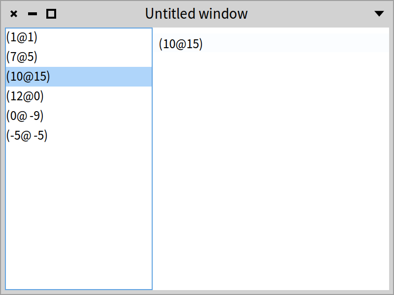
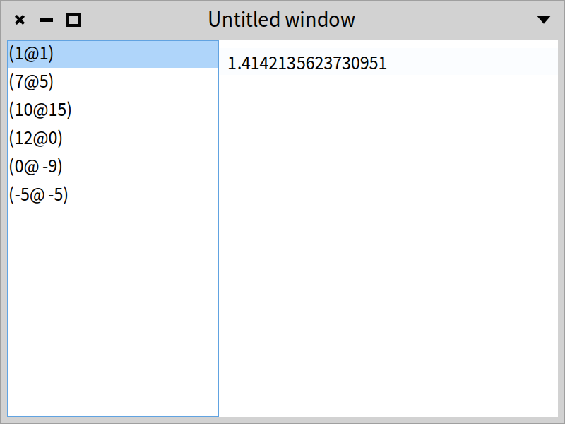
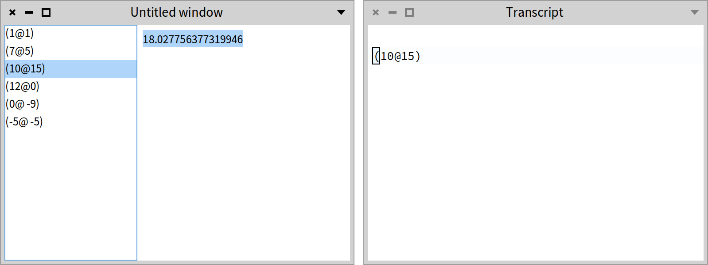

14 Using transmissions and ports
This chapter introduces transmissions, which are a more compact way to connect presenters than events as shown in earlier chapters. With some examples, the different aspects of transmissions will be explained.
14.1 What are transmissions?
Transmissions are a uniform way to connect presenters, thinking about the “flow” of data more than the way data is displayed.
Each presenter defines output ports, which are ports to send data, and input ports, which are ports to receive data.
When no interaction with a presenter is possible, it will not have an output port (SpLabelPresenter for example). Some presenters have no input port (SpMenuPresenter for example). Unless you define output ports and input ports for your presenters, they do not have any ports.
When a presenter has output and input ports, it defines which ports are the default output port and the default input port.
There are different classes of ports. If you do not find a suitable port class for your presenters, you can define your own.
A transmission connects a presenter’s output port with another presenter’s input port. When using transmissions, instead of thinking about events and how to act on them, you think about how data flows from one presenter's output port to another presenter's input port. The event handling is taken care of by the output ports.
14.2 A simple example
Let's take a look at a very simple example. Consider a presenter that shows an overview–detail relationship. We define a class OverviewDetailPresenter with two instance variables to hold a SpListPresenter and a SpTextPresenter.
SpPresenter << #OverviewDetailPresenter
slots: { #overview . #detail };
package: 'CodeOfSpec20Book'We populate the list with some Point instances.
OverviewDetailPresenter >> initializePresenters
overview := self newList
items: { 1@1 . 7@5 . 10@15 . 12@0 . 0@ -9 . -5@ -5 };
yourself.
detail := self newTextThe defaultLayout method is straightforward. It defines a horizontal box layout.
OverviewDetailPresenter >> defaultLayout
^ SpBoxLayout newLeftToRight
add: overview expand: false;
add: detail;
yourself
Here comes the most interesting method. The method connectPresenters connects the list to the text. We start simple with a logic that uses events and not transmissions. When a point is selected in the list, we simply show it in the text.
OverviewDetailPresenter >> connectPresenters
overview whenSelectedItemChangedDo: [ :selectedPoint |
detail text: selectedPoint asString ]When we open the presenter with the snippet below, the window looks like the one shown in Figure 14.1.
OverviewDetailPresenter new open14.3 Basic transmission
The method connectPresenters above uses the traditional way of connecting presenters. Let's use a transmission instead.
OverviewDetailPresenter >> connectPresenters
overview transmitTo: detailThe method transmitTo: is the most basic way to set up a transmission. It is implemented as follows:
SpAbstractPresenter >> transmitTo: aPresenter
^ self defaultOutputPort transmitTo: aPresenter defaultInputPortIn our example, the method above connects the list presenter's default output port with the detail presenter's default input port. SpAbstractPresenter >> defaultOutputPort and SpAbstractPresenter >> defaultInputPort define that any presenter can have a default output and a default input port. Browse the implementors of the two methods to learn how different presenter classes use output and input ports.
Presenters can have multiple output and input ports. They can be connected by sending the message transmitTo: to an output port, similar to what SpAbstractPresenter >> transmitTo: does with the default output and input ports.
When we open the presenter again, and we select a point in the list, an exception is raised. That is because the Point instance transmitted from the list presenter's default output port is not compatible with the kind of object expected by the text presenter's default input port. The latter expects a String, not a Point. This is a common situation. Only in simple use cases will the transmitted object be adequate for the input port. In many cases, the transmitted object needs to be transformed to transmit an adequate object to the input port. That is where transformations come in.
14.4 Transforming a transmitted object
The object transmitted from a presenter's output port can be inadequate for the input port of another presenter. There are two reasons why a transmitted object may be inadequate:
- The kind of object coming from an output port may not be acceptable for an input port. In our simple example, that is the case. The input port expects a
String, not aPoint. - The object itself coming from an output port may not be what you like to send to the input port.
Let's give examples of both reasons.
To fix the exception raised when selecting a point in the list, we adapt the method connectPresenters to answer a String instead of a Point:
OverviewDetailPresenter >> connectPresenters
overview
transmitTo: detail
transform: [ :selectedPoint | selectedPoint asString ]Now the behavior of the presenter is error-free.
Suppose that we do not like to merely show the selected point in the text, but that we like to show the distance of the selected point to the origin of the coordinate system. In the traditional way, the method connectPresenters would look like this:
OverviewDetailPresenter >> connectPresenters
overview whenSelectedItemChangedDo: [ :selectedPoint |
| distanceToOrigin |
distanceToOrigin := selectedPoint
ifNil: [ '' ]
ifNotNil: [ (selectedPoint distanceTo: 0@0) asString ].
detail text: distanceToOrigin ]When using a transmission, it is reduced to:
OverviewDetailPresenter >> connectPresenters
overview
transmitTo: detail
transform: [ :selectedPoint |
selectedPoint
ifNil: [ '' ]
ifNotNil: [ (selectedPoint distanceTo: 0@0) asString ] ]After opening, we see the window as shown in Figure 14.2.

14.5 Acting on a transmission without input port
Sometimes it is not necessary to send a transmitted object to the input port of a subpresenter. If your presenter has to do something when an object is being transmitted through an output port, it can use the message transmitDo:. The message takes a block that will be evaluated when there is a transmission.
Let's extend the simple example to show that. Suppose that for debugging purposes, we like to log the selected point to the Transcript. In the traditional way, we would implement connectPresenters like this:
OverviewDetailPresenter >> connectPresenters
overview whenSelectedItemChangedDo: [ :selectedPoint |
| distanceToOrigin |
distanceToOrigin := selectedPoint
ifNil: [ '' ]
ifNotNil: [ (selectedPoint distanceTo: 0@0) asString ].
detail text: distanceToOrigin.
selectedPoint crTrace ]With transmissions, we can achieve the same behavior as follows:
OverviewDetailPresenter >> connectPresenters
overview
transmitTo: detail
transform: [ :selectedPoint |
selectedPoint
ifNil: [ '' ]
ifNotNil: [ (selectedPoint distanceTo: 0@0) asString ] ].
overview transmitDo: [ :selectedPoint | selectedPoint crTrace ]14.6 Acting after a transmission
Sometimes, after a transmission happens, a presenter needs to modify something given the new status of a subpresenter. Examples are preselecting something, and updating the state of toolbar buttons. That is where post transmission actions come in. The messages that we have seen so far, have variations with an extra keyword argument postTransmission:.
Let's elaborate the simple example for the last time. Suppose we like to select the text after it has been set. In the traditional way, in the method connectPresenters, we would send selectAll to the text presenter:
OverviewDetailPresenter >> connectPresenters
overview whenSelectedItemChangedDo: [ :selectedPoint |
| distanceToOrigin |
distanceToOrigin := selectedPoint
ifNil: [ '' ]
ifNotNil: [ (selectedPoint distanceTo: 0@0) asString ].
detail text: distanceToOrigin.
detail selectAll.
selectedPoint crTrace ]With transmissions, we would add an extra postTransmission: keyword to the message that we used before. The extra argument is a block that takes up to three arguments. The first argument, often called destination, is the presenter of the input port. The second argument, often called origin, is the presenter of the output port. The third argument is the transmitted object, without transformation applied to it. In our example, we only need access to the destination argument. That is why there is only one argument in the postTransmission: block.
OverviewDetailPresenter >> connectPresenters
overview
transmitTo: detail
transform: [ :selectedPoint |
selectedPoint
ifNil: [ '' ]
ifNotNil: [ (selectedPoint distanceTo: 0@0) asString ] ]
postTransmission: [ :destination | destination selectAll ].
overview transmitDo: [ :selectedPoint | selectedPoint crTrace ]Let's open the presenter again to test the presenter with the transmissions.
OverviewDetailPresenter new openAfter selecting a point, we see the window as shown in Figure 14.3. The distance to the origin of the coordinate system is selected in the text, and the selected point is logged in the transcript.

14.7 Available ports
We described a very simple, albeit often used, use case with two kinds of ports where a selected object is input for some presenter. The output port of a SpListPresenter is an instance of SpSelectionPort. The input port of a SpTextPresenter is a SpTextPort instance. Instances of SpSelectionPort are applicable for the output ports of presenters that implement a selection mechanism. Instances of SpTextPort are applicable for the input ports of presenters that display or edit text (see the SpAbstractTextPresenter class hierarchy). All the presenter classes that implement widgets have their particular output port and input port classes. That is why there are different classes of ports. Their common superclass is SpAbstractPort, with two direct subclasses SpInputPort and SpOutputPort.
14.8 Ports and nesting presenters
When you implement your own presenters, they will use subpresenters that can be connected with transmissions. But what happens when you reuse your presenters in other presenters? The answer is simple: you will also use transmissions to connect them.
To make your presenters suitable for use with transmissions, the presenter classes have to define the output and input ports, and they have to implement the methods defaultOutputPort and defaultInputPort. Depending on the behavior of a presenter, the presenter class implements one or both methods. When defining the ports, you can use one of the available port classes. If you do not find a suitable port class for your presenters, you can define your own.
In some cases, it is not necessary to define new ports. Instead, delegation can be used to reuse a port of a subpresenter. We will see an example of delegation in the next section.
14.9 A more advanced example
In this section, we revisit the small email client application from Chapter 12.
Let's start with the presenter class MailClientPresenter. It had this method:
MailClientPresenter >> connectPresenters
account whenSelectionChangedDo: [ :selection |
| selectedFolderOrEmail |
selectedFolderOrEmail := selection selectedItem.
reader read: selectedFolderOrEmail.
self updateAfterSelectionChangedTo: selectedFolderOrEmail ]We adapt it to use a transmission:
MailClientPresenter >> connectPresenters
account
transmitTo: reader
postTransmission: [ :destination :origin :selectedFolderOrEmail |
self updateAfterSelectionChangedTo: selectedFolderOrEmail ]We send the message transmitTo:postTransmission: to express that the selection made in the account presenter (an instance of MailAccountPresenter) should be transmitted to the reader presenter (an instance of MailReaderPresenter), and that there is a post transmission action.
Although the method connectPresenters expresses the desired transmission behavior very succinctly, it does not work without additional changes. After all, we did not yet define the output port of the account presenter and the input port of the reader presenter.
For the account presenter, we can simply delegate defaultOutputPort, because the default output port of the SpTreePresenter that holds the folders and the emails, is a SpSelectionPort. It will provide the selected folder or email.
MailAccountPresenter >> defaultOutputPort
^ foldersAndEmails defaultOutputPortThe definition of the input port of the reader presenter is a bit more complex. A MailReaderPresenter instance expects to receive a Folder or an Email instance. That is what was expressed by reader read: selectedFolderOrEmail in the original implementation of MailClientPresenter >> connectPresenters. The folder or email is in fact the model of a MailReaderPresenter, but we did not provide it by sending setModel:, but by sending read:. We used read: because conceptually it made sense in the context of a MailReaderPresenter.
There is no input port class that knows the read: protocol, so we have two options. Either we implement a new input port class, or either we use SpModelPort. We choose the latter because we prefer reusing existing classes. But that means that we will have to implement setModel: on the MailReaderPresenter class because SpModelPort sends setModel: to give the transmitted object to the destination presenter. We can simply delegate to read: to make the presenter compatible with the protocol expected by SpModelPort.
MailReaderPresenter >> defaultInputPort
^ SpModelPort newPresenter: selfMailReaderPresenter >> setModel: email
self read: emailThat concludes the changes to introduce a transmission at the level of the MailClientPresenter. When opening the mail client with (MailClientPresenter on: MailAccount new) open, the mail application behaves as before, but now it uses a transmission.
14.10 Another variation
There is another presenter where we can use transmissions: the EmailPresenter. Its original connectPresenters method was implemented as follows.
EmailPresenter >> connectPresenters
from whenTextChangedDo: [ :text | self model from: text ].
to whenTextChangedDo: [ :text | self model to: text ].
subject whenTextChangedDo: [ :text | self model subject: text ].
body whenTextChangedDo: [ :text | self model body: text ]Although the change to use transmissions is superficial, the same behavior can be achieved with:
EmailPresenter >> connectPresenters
from transmitDo: [ :text | self model from: text ].
to transmitDo: [ :text | self model to: text ].
subject transmitDo: [ :text | self model subject: text ].
body transmitDo: [ :text | self model body: text ]The messages transmitDo: is used because we like a side effect on the model. No input ports are involved in the transmissions.
14.11 Conclusion
This chapter introduced transmissions and ports, and illustrated the concepts with two examples.
Output ports define the origins of data, and the transformations to apply to the data before transmitting it to an input port. Input ports define destinations of data. Transmissions connect output ports with input ports to define the flow of data between presenters.